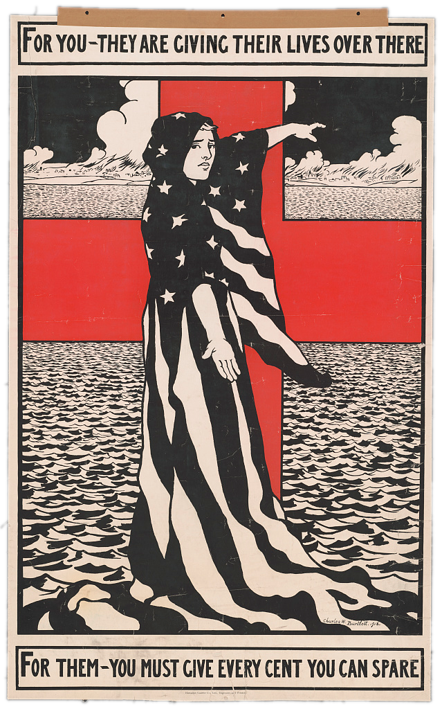
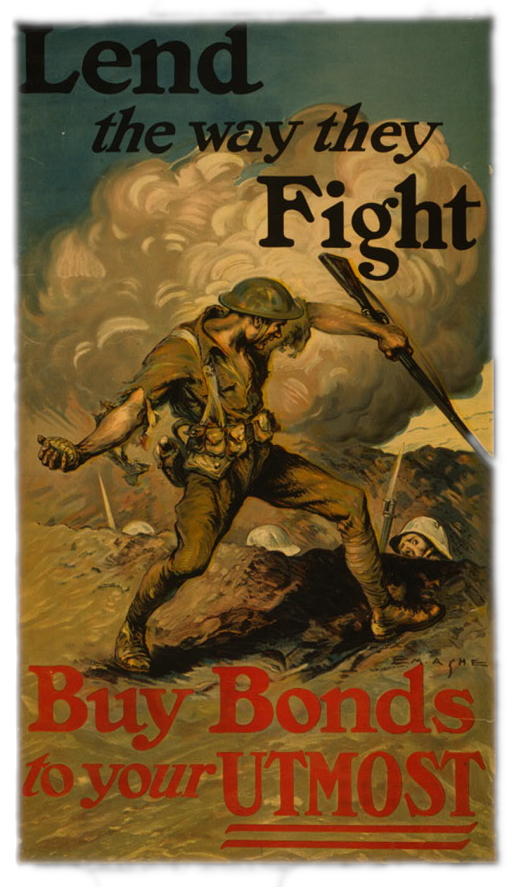

PROPAGANDA

Modern governments, corporations, and political parties actively exploit the tool of propaganda to influence the masses every day. This has been true for as long as structured civilization has existed. It only becomes more prevalent as modes of communication become more accessible. The US is no different.
When the U.S. government enters a war, it must continually justify to its citizenry that the war is justified and that resources should still be put into it. In World War I, the United States sent its propaganda machines into overdrive. This continued into World War II, and then the Cold War.
1918 - The American Red Cross recruited over one third of the United States population as donors or volunteers. This American Red Cross poster shows how this was achieved -- notice the usage of Miss Columbia, the personification of the U.S itself, solemnly looking for aid, the striking Red Cross of the background. The text is more of a two-sentence poem instead of a memorable slogan.
1918 - Much of the propaganda was about funding the war -- to be fair, those seeing it probably were not the ones fit to fight. Notice that the text is rather poetic. The framing focuses the
1943 - Notice the usage of emotional appeals in this poster: it frames the viewer's inaction as hurting a soldier on the field. The usage of large, geometric lettering for "BUY WAR BONDS" makes it the forefront of the image, and the first thing that the viewer looks at.

1943 - However, perhaps the most effective method of messaging is this nebulous idea of freedom. Remember that freedom is inapplicable to anything other than the individual. In other words, by saying "For Freedom's Sake" it directly pins it onto the listener, i.e. "For Your Freedom's Sake." That is why it is such an effective rhetorical strategy: it's a one word emotional appeal.